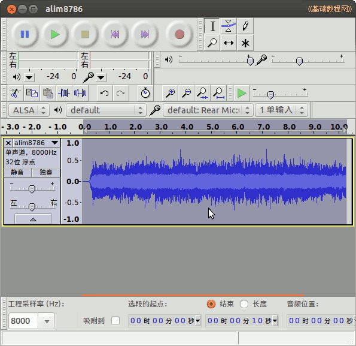
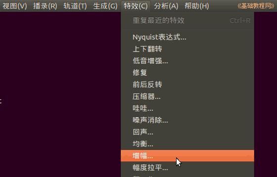
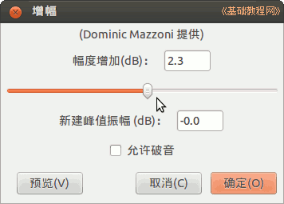
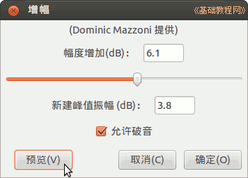
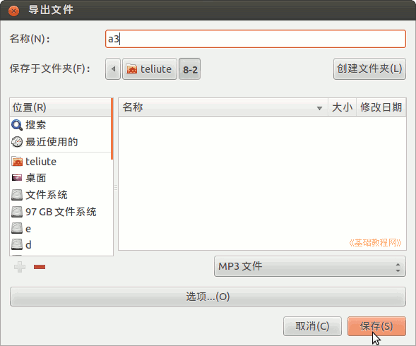

Audacity 音频编辑器教程
作者：TeliuTe 来源：基础教程网
三、调整音量 返回目录 下一课使用菜单“特效—增幅”命令，可以调整音频的音量；
1、调整音量
1）启动 Audacity，点菜单”文件—打开“命令，打开一个音频文件，本课有练习文件(下载)；

2）点菜单“特效—增幅”命令，打开音量调节对话框；

3）在出来的对话框中，把音量滑块向右拖动，增大音量；

4）点左下角“预览”按钮试听一下，然后点确定，如果确定是灰色的，打勾“允许破音；

5）点菜单“文件—导出”命令，以 a3 为文件名，保存文件到自己的文件夹；

6）在出来的音乐标签中，输入自己的标签，点“确定”完成，如果以后还要处理文件，再点菜单“文件－保存”命令保存一下工程；
本节学习了调整音量的基础知识，如果你成功地完成了练习，请继续学习下一课内容；
本教程由86团学校TeliuTe制作|著作权所有
基础教程网：http://teliute.org/
美丽的校园……
转载和引用本站内容，请保留版权信息和本站链接。